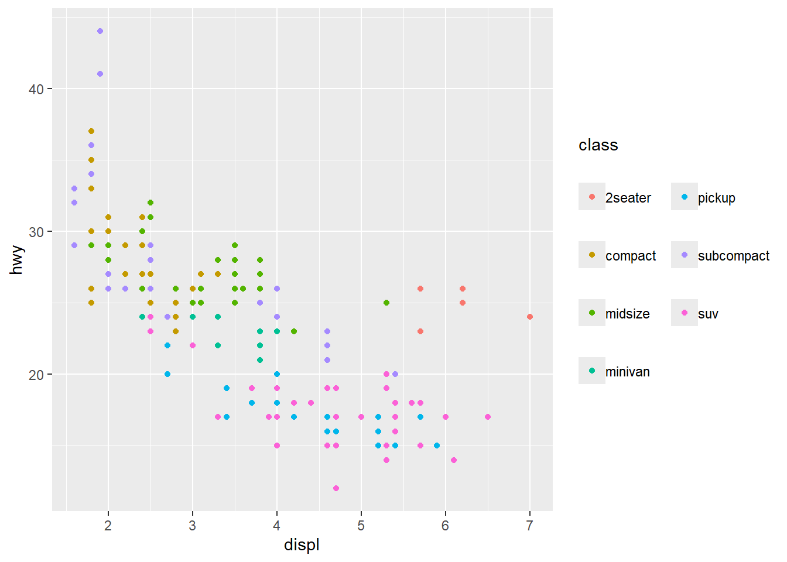

9 R语言图例修改自定义教程
9.1 图例样式修改介绍
ggplot2中的图例样式修改（图例间距，位置修改等）一直是大部分用户的心头痛，因为它的修改方法实在太多了，而且很难记住。多种参数方法看起来杂乱无章，但是在24年2月更新的ggplot2 2.3.5之后，ggplot2的图例修改方法终于有了一个统一的标准。接下来我们一起学习一下吧
在ggplot2更新后有且仅有一种方式修改图例样式，那就是使用theme()参数 。theme()函数有新的参数来控制图例的外观，这使得全局控制图例的外观变得更容易。例如： theme(legend.frame)替换 guide_colourbar(frame.colour, frame.linewidth, frame.linetype) 和 theme(legend.axis.line)替换 guide_bins(axis, axis.colour, axis.linewidth, axis.arrow) 。（如果有其它方法就是还没弃置，建议不要用了）
9.4 图例行为
9.4.1 guide_legend系列
ggplot2 中的图例包含名为guide_legend()，还包括guide_colourbar() 、 guide_coloursteps()和guide_bins()基本参数都一致，设置图例的类型 。
9.4.2 更新后加了什么
下方代码展示了如何设置某单独映射的图例样式和全局样式的区别。如果要单独设置某映射的图例样式，只需将其添加到guides() 。如果要设置全局样式，只需将其添加到theme() 。最终的参数形式就是theme(legend.XXX = element_XXX()) 。
ggplot(mpg, aes(displ, hwy, shape = factor(cyl), colour = cty)) +
geom_point() +
# 设置单独映射的图例
guides(
shape = guide_legend(theme = theme(legend.text = element_text(colour = "red"))),
colour = guide_colorbar(theme = theme(legend.frame = element_rect(colour = "red")))
) +
# 设置全局图例的样式
theme(
legend.title.position = "left",
# Title justification is controlled by hjust/vjust in the element
legend.title = element_text(angle = 90, hjust = 0.5)
)9.4.3 图例是否显示
唯一不放在theme里的参数就是legend.show 。您可以在图层中设置show.legend = TRUE选项。和以前一样， show.legend参数仍然可以以特定于美学的方式设置。将其设置为TRUE表示“始终显示”， FALSE表示“从不显示”， NA表示“如果找到则显示”。查看下方示例，在设置了plot的showlegend里在图例中强制显示了点和线。
9.4.4 图例位置
图例位置不再仅限于图的一侧。通过设置guides的position参数，你可以定制哪些参考线出现在绘图中的位置。没有设置位置的参考线（例如下面的“drv”形状图例）遵循全局主题的legend.position设置。
p <- ggplot(mpg,
aes(displ, hwy, shape = drv, colour = cty, size = year)) +
geom_point(aes(alpha = cyl))+
theme(legend.position = "left") +
guides(
colour = guide_colourbar(position = "right"),
size = guide_legend(position = "top"),
alpha = guide_legend(position = "inside")
)
p9.4.4.1 图例的对齐
图例的对齐可以通过使用theme的legend.justification.{position}参数来控制。此外，通过设置legend.location参数，可以将顶部和底部参考线与绘图而不是面板对齐。默认情况下，当plot.title.position = "plot"时，左侧图例已经对齐。因此，对于legend.location设置，顶部和底部参考线优先。
p +
labs(title = "Plot-aligned title") +
theme(
legend.margin = margin(0, 0, 0, 0), # turned off for alignment
legend.justification.top = "left",
legend.justification.left = "top",
legend.justification.bottom = "right",
legend.justification.inside = c(1, 1),
legend.location = "plot",
plot.title.position = "plot"
)9.4.5 图例的间距
我们先观看一下下方的图，表示图例的组成和间距的含义

当标题和键没有明确的边距时，会根据文本或标题位置自动添加适当的边距。但是，如果您覆盖边距，它们将按你的设置来走。
ggplot(mpg, aes(displ, hwy, colour = class)) +
geom_point() +
guides(colour = guide_legend(ncol = 2)) +
theme(
legend.key.spacing.x = unit(10, "pt"),
legend.key.spacing.y = unit(20, "pt"),
legend.text = element_text(margin = margin(l = 0)),
legend.title = element_text(margin = margin(b = 20))
)
9.4.6 添加特殊图例
guide_custom() 。它可用于将任何图形对象（grob）添加到绘图中，例如annotation_custom() 。但有一些区别：它的位置就像图例一样，并添加了标题和页边距。从某种意义上说，本图例是“特殊的”，因为它是唯一不直接反映比例的指南。缺点是它无法从图中读取属性，但优点是它非常灵活。
x <- c(0.5, 1, 1.5, 1.2, 1.5, 1, 0.5, 0.8, 1, 1.15, 2, 1.15, 1, 0.85, 0, 0.85)
y <- c(1.5, 1.2, 1.5, 1, 0.5, 0.8, 0.5, 1, 2, 1.15, 1, 0.85, 0, 0.85, 1, 1.15)
compass_rose <- grid::polygonGrob(
x = unit(x, "cm"), y = unit(y, "cm"), id.lengths = c(8, 8),
gp = grid::gpar(fill = c("grey50", "grey25"), col = NA)
)
nc <- sf::st_read(system.file("shape/nc.shp", package = "sf"), quiet = TRUE)
ggplot(nc) +
geom_sf(aes(fill = AREA)) +
guides(custom = guide_custom(compass_rose, title = "compass"))